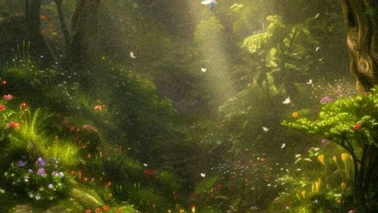

Prompt 1
Magic costs the user a memory each time it is cast. Someone is nearly out of memories.

Fantasy
Open a door to somewhere that should not exist.
Magic costs the user a memory each time it is cast. Someone is nearly out of memories.
A dragon applies for a job at the village bakery.
The map in your hero's pocket redraws itself every night.
Two kingdoms share one moon, and it has chosen a side.
A forest grows overnight around a house, and the owner is missing.
The prophecy named the wrong person, and everyone knows it.